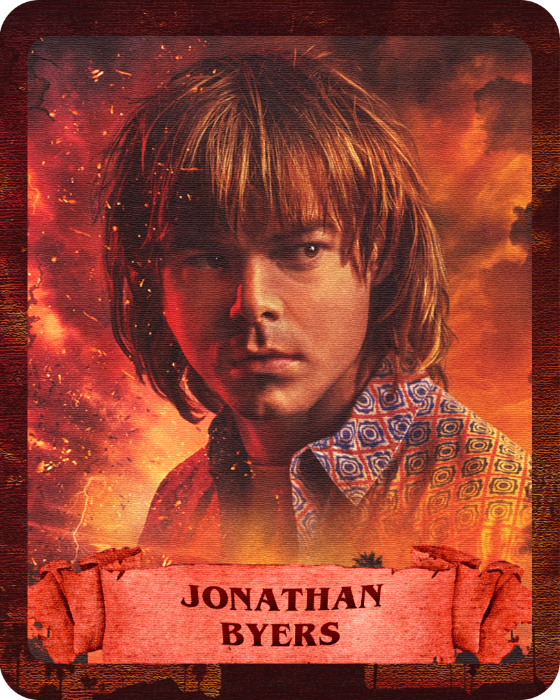
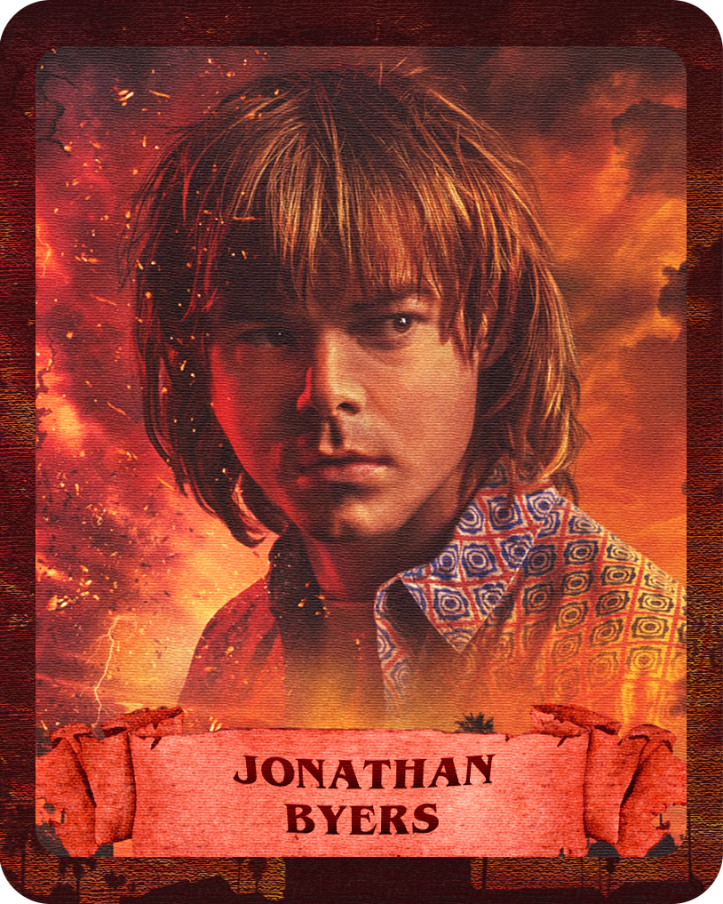

LOS PERSONAJES
 


HÉROES DE HAWKINS
Los que nos robaron el corazón
En este gráfico se muestran los cinco personajes que más han capturado a los fans de Stranger Things. Cada porción refleja la popularidad relativa de los personajes según encuestas recientes, destacando quiénes se han ganado un lugar especial en la serie y en la cultura pop. Estos personajes no solo destacan por sus historias y habilidades, sino también por la conexión emocional que han generado con la audiencia a lo largo de las temporadas.